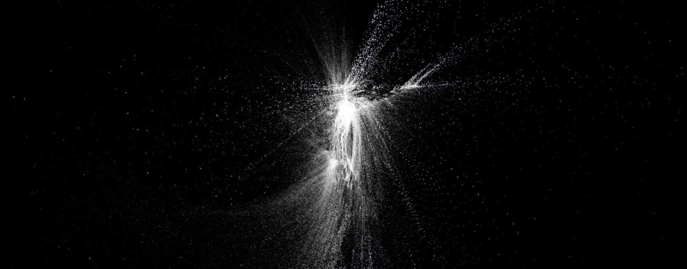

oratorio virtuale
0ratorio Virtuale is an electroacoustic audio-visual rework
of the baroque oratorio "San Giovanni Battista" (1675, Alessandro Stradella).
Commissioned by the Eutopia Ensemble and
Forevergreen.fm
the opera was presented for Electropark 2019,
Le Strade del Suono and Le vie del Barocco (October 16th 2019 @Villa del Principe, Genova - IT).
The original oratorio tells the story of the tragic death of John the Baptist,
who tries to convince Herode to end the relationship with his brother's wife.
The latter and her daughter, Salome, not willing to give up their sumptuous life,
they convince Herode to imprison the Baptist. The epilogue is tragic: when Herode,
after the sensual dance of Salome, offers her whatever she desires, Salome asks for the head of the prophet.
In my rework, the original oratorio acquires an allegorical meaning.
John the Baptist is depersonalized, embracing rather the pre-Christian symbolism that accompanies him.
A wild man who lives in the desert,
he symbolises the darkness from whose experience it is possible to approach the light:
the solis statio (arrest of the Sun).

The Baptist is celebrated on the summer solstice day, linking him to the pagan cults of the Sun.
"The door of men", from which a renewed light flows:
the ecstatic union of the opposites. Sun-Moon, Fire-Water, Light-Shadow, Man-Woman,
Positive-Negative, Good-Evil, Soul-Body, Love-Hate.
Fragments of the Symphony and some Arias of the original oratorio are exploited,
both through the sampling and processing of audio recordings,
and by reworking the musical materials (melodies, harmony, rhythms) composed by Stradella.

The audio fragments are combined to create a 3D visual space, which supports the sound metamorphosis of the ancient materials.
The result is a pulsating audio-visual work, with rich electroacoustic textures, which alternate
rarefied acoustic moments with dramatic noise/IDM blasts, weaving a network of unexpected relations with the original work and
searching for the fulcrum of the John the Baptist's symbolism.

Alberto Barberis
Copyright ©2019 Alberto Barberis. All rights reserved. The content of this website is private and contains confidential and privileged material. It is accessible only to person or entity to which it is addressed directly by Alberto Barberis. Any retransmission, dissemination, sharing of the web site material, and/or other actions, is absolutely forbidden.